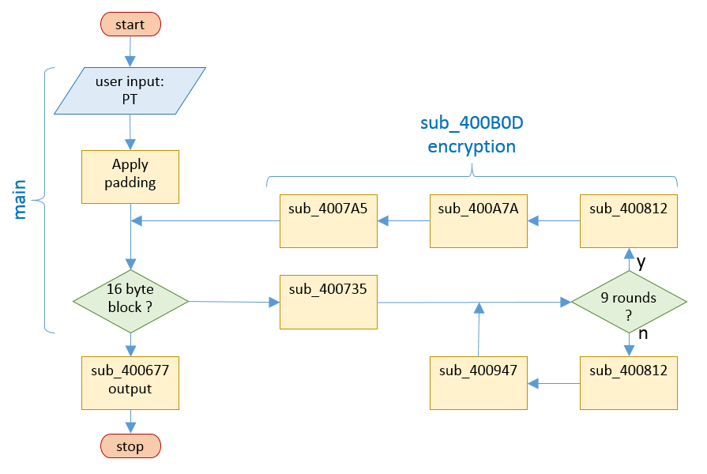

Do you know the mighty WhiteBox encryption tool? Decrypt the following cipher text!
9771a6a9aea773a93edc1b9e82b745030b770f8f992d0e45d7404f1d6533f9d
f348dbccd71034aff88afd188007df4a5c844969584b5ffd6ed2eb92aa419914e
White-box cryptography is a technique where the encryption key is combined with the encryption mechanism of a cryptographic method in such a way that a message can be encrypted without additional parameters, i.e. as if the key was hardcoded into the application. However, the key is very hard to derive from the code, even though the cryptographic algorithms could be openly observed and modified. This is intended for use on open devices, where one has no control over the environment and does not want to expose an explicit copy of the encryption key for security reasons.
One can view white-box cryptography as a special-purpose obfuscation method, designed for obfuscating a very specific kind of code. As such, it is vulnerable to attack, as described for example here.
The code is structured as in the flow chart below. After entering a message to encrypt, this is padded to a multiple of 16 and cut into 16 byte blocks. Each block is then encrypted independently by sub_400B0D (ECB mode). The resulting bytestream is printed by sub_400677 in hex format.

__int64 __fastcall sub_400B0D(__int64 a1)
{
char v2; // [sp+8h] [bp-20h]@1
int i; // [sp+24h] [bp-4h]@1
sub_400735(a1, (__int64)&v2);
for ( i = 0; i <= 8; ++i )
{
sub_400812((__int64)&v2);
sub_400947(i, (__int64)&v2);
}
sub_400812((__int64)&v2);
sub_400A7A((__int64)&v2);
sub_4007A5((__int64)&v2, a1);
return a1;
}
The block size and the 9 round encryption mechanism make it very likely that this is AES-128 in ECB mode. Here are some very helpful links for understanding how AES works and how the algorithm is usually coded:
Normal AES-128 encrypts with the sequence of operations (acting on a 4x4 AES block matrix)
Round 0:
AddRoundKey
Round 1 - Round 9:
SubBytes
ShiftRows
MixColumns
AddRoundKey
Round 10:
SubBytes
ShiftRows
AddRoundKey
This sequence is not fixed, however. SubBytes can be switched with ShiftRows without
any impact. AddRoundKey can also be moved past ShiftRows, provided that ShiftRows
is applied to the round key itself before use. Hence, an equivalent sequence is:
Round 0:
---
Round 1 - Round 9:
ShiftRows
AddRoundKey (shifted)
SubBytes
MixColumns
Round 10:
ShiftRows
AddRoundKey (shifted)
SubBytes
AddRoundKey
This modified sequence is what is being used for the whitebox.
The component subroutines within sub_400B0D are:
__int64 __fastcall sub_400735(__int64 a1, __int64 a2)
{
signed int j; // [sp+18h] [bp-8h]@2
signed int i; // [sp+1Ch] [bp-4h]@1
for ( i = 0; i <= 3; ++i )
{
for ( j = 0; j <= 3; ++j )
{
*(_BYTE *)(4*i + j + a2) = *(_BYTE *)(4*j + i + a1);
}
}
}
Write a 16 byte block of data into the columns of a 4x4 AES matrix.
_BYTE *__fastcall sub_4007A5(__int64 a1, __int64 a2)
{
signed int j; // [sp+18h] [bp-8h]@2
signed int i; // [sp+1Ch] [bp-4h]@1
for ( i = 0; i <= 3; ++i )
{
for ( j = 0; j <= 3; ++j )
{
*(_BYTE *)(4*j + i + a2) = *(_BYTE *)(4*i + j + a1);
}
}
}
Convert a 4x4 AES matrix by column into a 16 byte data block.
__int64 __fastcall sub_400812(__int64 a1)
{
__int64 v1; // ST00_8@1
char v2; // ST17_1@1
char v3; // ST17_1@1
char v4; // ST17_1@1
unsigned __int8 v5; // ST17_1@1
__int64 result; // rax@1
v1 = a1;
v2 = *(_BYTE *)(a1 + 4);
*(_BYTE *)(a1 + 4) = *(_BYTE *)(a1 + 5);
*(_BYTE *)(v1 + 5) = *(_BYTE *)(v1 + 6);
*(_BYTE *)(v1 + 6) = *(_BYTE *)(v1 + 7);
*(_BYTE *)(a1 + 7) = v2;
v3 = *(_BYTE *)(a1 + 8);
*(_BYTE *)(v1 + 8) = *(_BYTE *)(v1 + 10);
*(_BYTE *)(a1 + 10) = v3;
v4 = *(_BYTE *)(a1 + 9);
*(_BYTE *)(v1 + 9) = *(_BYTE *)(v1 + 11);
*(_BYTE *)(a1 + 11) = v4;
v5 = *(_BYTE *)(a1 + 12);
*(_BYTE *)(v1 + 12) = *(_BYTE *)(v1 + 15);
*(_BYTE *)(v1 + 15) = *(_BYTE *)(v1 + 14);
*(_BYTE *)(v1 + 14) = *(_BYTE *)(v1 + 13);
result = v5;
*(_BYTE *)(a1 + 13) = v5;
}
This implements the AES ShiftRows operation:
0 1 2 3 0 1 2 3
4 5 6 7 ---> 5 6 7 4
8 9 a b a b 8 9
c d e f f c d e
char *__fastcall sub_400947(int a1, __int64 a2)
{
// a1 = round
// a2 = block addr.
char *result; // rax@3
int m; // [sp+28h] [bp-18h]@11
int l; // [sp+2Ch] [bp-14h]@10
int k; // [sp+30h] [bp-10h]@5
int j; // [sp+34h] [bp-Ch]@2
unsigned int v7; // [sp+38h] [bp-8h]@2
int i; // [sp+3Ch] [bp-4h]@1
__int64 savedregs; // [sp+40h] [bp+0h]@6 // reserved area at rbp-30h
for ( j = 0; j <= 3; ++j )
{
v7 = 0;
for ( i = 0; i <= 3; ++i )
{
v7 ^= dword_603060[ 0x100*(4*(4*a1 + i) + j) + *(_BYTE *)(4*i + j + a2) ];
}
for ( k = 0; k <= 3; ++k )
{
*(_BYTE *)(4*k + j + (&savedregs - 0x30)) = (v7 >> 8*k) & 0xFF;
}
}
for ( i = 0; i <= 3; ++i )
{
for ( j = 0; j <= 3; ++j )
{
*(_BYTE *)(4*i + j + a2) = *(_BYTE *)(4*i + j + (&savedregs-0x30));
}
}
}
Here AddRoundKey (shifted), SubBytes and MixColumns have been combined into
a single operation, according to the alternative sequence above. To do this,
the round key and the substitution box have been combined into a new substitution
matrix which changes with every matrix position and every round. This has been
hard-coded into memory starting at 0x603060, in effect a set of 9*4*4 substitution
boxes, each of size 0x100.
Note that savedregs simply corresponds to
a reserved memory area on the stack which is used as intermediate storage.
__int64 __fastcall sub_400A7A(__int64 a1)
{
__int64 result; // rax@3
signed int j; // [sp+10h] [bp-8h]@2
signed int i; // [sp+14h] [bp-4h]@1
for ( i = 0; i <= 3; ++i )
{
for ( j = 0; j <= 3; ++j )
{
*(_BYTE *)(4*i + j + a1) = *(&byte_602060[0x100 * (4*i + j)] + *(_BYTE *)(4*i + j + a1));
}
}
}
Similar to sub_400947, this combines AddRoundKey (shifted), SubBytes and the final AddRoundKey into another hard-coded substitution box set depending on matrix position.
This nice scheme has a weakness: round 0 of the AES key scheduler is the original key! In normal AES operation this does not hurt, but in the whitebox we have control over the algorithm and can stop it after one round. If we apply the AES decryption steps InverseMixColumns and InverseSubBytes to the result, we get back to the AddRoundKey(shifted) stage. Because this is just XOR, we can simply lift the round 0 key from there. This is done by the script below:
import struct
inv_sbox = (
0x52, 0x09, 0x6A, 0xD5, 0x30, 0x36, 0xA5, 0x38, 0xBF, 0x40, 0xA3, 0x9E, 0x81, 0xF3, 0xD7, 0xFB,
0x7C, 0xE3, 0x39, 0x82, 0x9B, 0x2F, 0xFF, 0x87, 0x34, 0x8E, 0x43, 0x44, 0xC4, 0xDE, 0xE9, 0xCB,
0x54, 0x7B, 0x94, 0x32, 0xA6, 0xC2, 0x23, 0x3D, 0xEE, 0x4C, 0x95, 0x0B, 0x42, 0xFA, 0xC3, 0x4E,
0x08, 0x2E, 0xA1, 0x66, 0x28, 0xD9, 0x24, 0xB2, 0x76, 0x5B, 0xA2, 0x49, 0x6D, 0x8B, 0xD1, 0x25,
0x72, 0xF8, 0xF6, 0x64, 0x86, 0x68, 0x98, 0x16, 0xD4, 0xA4, 0x5C, 0xCC, 0x5D, 0x65, 0xB6, 0x92,
0x6C, 0x70, 0x48, 0x50, 0xFD, 0xED, 0xB9, 0xDA, 0x5E, 0x15, 0x46, 0x57, 0xA7, 0x8D, 0x9D, 0x84,
0x90, 0xD8, 0xAB, 0x00, 0x8C, 0xBC, 0xD3, 0x0A, 0xF7, 0xE4, 0x58, 0x05, 0xB8, 0xB3, 0x45, 0x06,
0xD0, 0x2C, 0x1E, 0x8F, 0xCA, 0x3F, 0x0F, 0x02, 0xC1, 0xAF, 0xBD, 0x03, 0x01, 0x13, 0x8A, 0x6B,
0x3A, 0x91, 0x11, 0x41, 0x4F, 0x67, 0xDC, 0xEA, 0x97, 0xF2, 0xCF, 0xCE, 0xF0, 0xB4, 0xE6, 0x73,
0x96, 0xAC, 0x74, 0x22, 0xE7, 0xAD, 0x35, 0x85, 0xE2, 0xF9, 0x37, 0xE8, 0x1C, 0x75, 0xDF, 0x6E,
0x47, 0xF1, 0x1A, 0x71, 0x1D, 0x29, 0xC5, 0x89, 0x6F, 0xB7, 0x62, 0x0E, 0xAA, 0x18, 0xBE, 0x1B,
0xFC, 0x56, 0x3E, 0x4B, 0xC6, 0xD2, 0x79, 0x20, 0x9A, 0xDB, 0xC0, 0xFE, 0x78, 0xCD, 0x5A, 0xF4,
0x1F, 0xDD, 0xA8, 0x33, 0x88, 0x07, 0xC7, 0x31, 0xB1, 0x12, 0x10, 0x59, 0x27, 0x80, 0xEC, 0x5F,
0x60, 0x51, 0x7F, 0xA9, 0x19, 0xB5, 0x4A, 0x0D, 0x2D, 0xE5, 0x7A, 0x9F, 0x93, 0xC9, 0x9C, 0xEF,
0xA0, 0xE0, 0x3B, 0x4D, 0xAE, 0x2A, 0xF5, 0xB0, 0xC8, 0xEB, 0xBB, 0x3C, 0x83, 0x53, 0x99, 0x61,
0x17, 0x2B, 0x04, 0x7E, 0xBA, 0x77, 0xD6, 0x26, 0xE1, 0x69, 0x14, 0x63, 0x55, 0x21, 0x0C, 0x7D,
)
def mul_gal(a, b):
# Galois multiplication
p = 0
for counter in range(8):
if b & 1 == 1:
p ^= a
hi_bit_set = a & 0x80
a <<= 1
if hi_bit_set == 0x80:
a ^= 0x1b
b >>= 1
return p & 0xff
def inv_mix_columns(col):
return [
mul_gal(col[0], 0x0e) ^ mul_gal(col[1], 0x0b) ^ mul_gal(col[2], 0x0d) ^ mul_gal(col[3], 0x09),
mul_gal(col[0], 0x09) ^ mul_gal(col[1], 0x0e) ^ mul_gal(col[2], 0x0b) ^ mul_gal(col[3], 0x0d),
mul_gal(col[0], 0x0d) ^ mul_gal(col[1], 0x09) ^ mul_gal(col[2], 0x0e) ^ mul_gal(col[3], 0x0b),
mul_gal(col[0], 0x0b) ^ mul_gal(col[1], 0x0d) ^ mul_gal(col[2], 0x09) ^ mul_gal(col[3], 0x0e)
]
# unpack main lookup table
with open("D_603060", "rb") as fh:
raw_603060 = fh.read()
d_603060 = struct.unpack("L" * (len(raw_603060) // 4), raw_603060)
# start with some arbitrary state, inserted after ShiftRows step (sub_400812)
state = [ord(c) for c in "Ireallyhatewhite"]
# compute first whitebox step as in sub_400947
res_white = [0] * 16
for j in range(4):
v = 0
for i in range(4):
v ^= d_603060[(4*i + j) * 0x100 + state[4*i + j]]
test_white = [(v >> 8*k) & 0xff for k in range(4)]
for i in range(4):
res_white[4*i + j] = test_white[i]
# invert part of round 0 for classical AES: inv MixColumns followed by inv SubBytes
res_inv_aes = [0]*16
for j in range(4):
v = [res_white[4*i + j] for i in range(4)]
mix = inv_mix_columns(v)
for i in range(4):
res_inv_aes[4*i + j] = inv_sbox[mix[i]]
print([hex(r) for r in state])
print([hex(r) for r in res_white])
print([hex(r) for r in res_inv_aes])
print("\nRound 0 key:")
print([hex(a ^ s) for s, a in zip(state, res_inv_aes)])
The results:
'0x49', '0x72', '0x65', '0x61',
'0x6c', '0x6c', '0x79', '0x68',
'0x61', '0x74', '0x65', '0x77',
'0x68', '0x69', '0x74', '0x65'
'0xb3', '0x69', '0x1d', '0x45',
'0xf6', '0x48', '0x10', '0xd5',
'0x3e', '0xdb', '0x53', '0x50',
'0xdd', '0xbd', '0xd6', '0x9e'
'0x7a', '0x1c', '0x3a', '0x3e',
'0x08', '0x07', '0x38', '0x05',
'0x52', '0x47', '0x07', '0x44',
'0x5d', '0x5a', '0x10', '0x1c'
'0x33', '0x6e', '0x5f', '0x5f',
'0x64', '0x6b', '0x41', '0x6d',
'0x33', '0x33', '0x62', '0x33',
'0x35', '0x33', '0x64', '0x79'
'0x33', '0x6e', '0x5f', '0x5f', 3n__
'0x6d', '0x64', '0x6b', '0x41', mdkA
'0x62', '0x33', '0x33', '0x33', b333
'0x33', '0x64', '0x79', '0x35' 3dy5
All that remains is to decrypt the ciphertext given with an AES decryptor of choice:
Congrats! Enter whiteboxblackhat into the Egg-o-Matic!